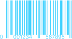
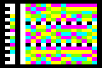

They may seem to come from another galaxy - enchanting and almost magical. However, they are of earthly origin. They serve as a bridge between the hidden digital and the visible analog world, allowing for the lightning-fast transmission of information between these two realms. In this regard, they are true wizards!
What problem do barcodes solve?
Imagine standing in line at the supermarket checkout. There are approximately 20 people ahead of you with full shopping carts, each containing an average of 30 items.
This means that approximately 20 x 30 = 600 items need to be scanned and processed before it's your turn.
For each item, the product number must be entered into the cash register system. For instance, a European Article Number (EAN) consists of 13 digits.
Normally, these 13 digits would have to be manually typed in for each individual item.
Assuming this process takes about 10 seconds per item, including possible errors and corrections, it would mean that you would need approximately
6,000 seconds for 600 items, which equates to 100 minutes or 1.6 hours.
That's how long you would have to wait in line.
Manual data capture is extremely slow and error-prone. Thanks to barcodes, data can be captured much faster.
Scanning a barcode reduces the entry of a single item number to less than 1 second. This means that 600 items can be processed in just 10 minutes instead of 1.6 hours. Hooray, thanks to barcodes, we only have to wait in line for 10 minutes!
This fundamental principle of automated data capture is not only applied at supermarket checkouts but also in manufacturing facilities, the logistics sector, the pharmaceutical industry, public transportation, and many other aspects of our daily lives.
Capturing plain text via camera?
Certainly, it is possible to take a photo of the article number or relevant text and transfer the data to the computer, subsequently extracting the information from an image using optical character recognition (OCR). However, this approach has several disadvantages compared to scanning barcodes in practice.
Scanning barcodes is unequivocal and unambiguous, whereas optical character recognition (OCR) can yield incomplete and ambiguous results.
Accuracy of Captured Data
With this method, there is no certainty regarding the accuracy of the captured data. Often, this method leads to data being misinterpreted or transmitted incompletely at the destination. The verification of data capture accuracy can ultimately only be done by a human. Scanning the barcode, on the other hand, provides a clear result. Either the capture was successful or it wasn't. If it was successful, the captured data is correct. There is no gray area. This definitiveness is crucial for automated data processing
Error Correction
Especially 2D codes have automatic error correction mechanisms. These mechanisms enable correct data capture even if a barcode is partially damaged. In contrast, with a printed article number, for example, if the last two digits are missing due to damage, the number will also be captured incompletely in the computer.
Physical Space and Data Density
For example, a DataMatrix code can be printed on extremely small surfaces and can be captured with great precision and speed. In contrast, numbers or longer texts become unreliable as they get smaller. They require a larger physical area, which may not be available on small electronic components, for instance.
Evolution of barcodes
Experiments with barcodes began as early as the 1940s. Since then, these codes have undergone an impressive development and are now available in many forms and for different purposes. Basically, barcode technology can be divided into two broad categories: 1D barcodes and 2D matrix barcodes. Based on 2D code technology, an additional class of 3D barcodes has evolved, essentially providing expanded data density and thus increased overall capacity.
In the development of barcodes, the main objective has always been to store as much data as possible in a limited physical area. Another crucial aspect was the integration of extremely efficient automatic error correction mechanisms, as barcodes are prone to damage in the physical world.
The properties of barcodes have steadily improved over time. ECL = error correction level in %. Capacity = hight of capacity and data density. size = flexibility in the physical size.
1D barcodes
1D barcodes, also known as linear codes, represent the first generation of barcodes. They became established in the 1970s, especially in supermarkets, and have retained their place ever since. These barcodes consist of horizontally arranged bars and spaces of varying thickness. They are designed for horizontal reading and therefore have a limited capacity, which means that they can usually only hold a few alphanumeric characters.
An article number is scanned and transferred to the computer. This article number is used to determine further article information in the system.
1D barcodes are typically read using a special scanner that requires precise horizontal scanning. The scanner acts like a keyboard and transmits the data to the computer through a single scan. Due to their limited capacity, these barcodes usually only have article numbers, while other relevant information, such as product name, manufacturer and price, is stored on the computer or server.
Understandable numbers that are human readable usually appear above or below a barcode symbol. These numbers correspond to the digits encoded in the barcode and allow people to identify the code without scanning it. They act as a sort of backup in case barcodes are damaged or distorted and therefore can no longer be recognized by a barcode reader.
Anatomy of 1D barcodes
Barcodes represent information by a sequence of bars and spaces. The information encoded in this way can be numbers, letters or special characters. The characters are assigned to a pattern of bars and spaces according to a predefined encoding procedure. This procedure determines how the characters are converted into a binary representation, where dashes are often represented as binary ones and free spaces as binary zeros.
A typical structure of an EAN8 barcode. In the example, the first number of an EAN-8 barcode is decoded. The remaining numbers of the barcode are read according to the same principle. This approach is valid for almost all 1D barcodes.
To indicate the beginning and end of the barcode, start and stop characters are added. These are important so that the barcode reader knows where the barcode begins and ends. The width and order of the bars and spaces are also standardized and are determined according to the barcode specifications. In some barcode types, a checksum is calculated and added to detect errors during reading.
Decoding the barcode
The barcode is divided into various logical segments. Some of them are visible, while others are not, at least not at first glance. The spaces between the bars are, in fact, also bars that are simply white.
The entire EAN-8 barcode is divided into 67 equally wide segments, each of which has a value of either 0 or 1. The visible bars can occupy 1 to a maximum of 4 of these segments in width, explaining the distinction between narrow and wide bars. A black bar corresponds to a 1, while a white space corresponds to a 0.
1. Guards
The long bars in the barcode are referred to as guards and belong to the category of metadata. These guards aid in decoding to recognize where the data sequences begin and precisely end. Therefore, the long bars on the left are called Start Guard, and those on the right are known as Stop Guard. Each of them is 3 bars wide, consisting of 2 black bars with a white bar in between. In the middle, there is also the Center Guard, which divides the barcode into the left and right data sequences.
2. Data/Content
The data or the actual content of the barcode is represented in the form of slightly shorter bars between the guards and is divided into 2 parts: the left and the right data field. On the left side, exactly 4 numbers are encoded. The same applies to the right side.
A single digit is precisely encoded by 7 segments. Where a bar is black, the corresponding segment receives the value 1, while it remains white when it should be 0. Thus, for each encoded decimal digit, a sequence of exactly 7 ones and zeros is determined. Reading proceeds from left to right. Since there are 8 decimal digits encoded in an EAN-8 code, a total of exactly 8 x 7 blocks of 1s and 0s are determined, with 4 on the left and 4 on the right side.
3. Translation table
A single code block, consisting of 7 ones and zeros, corresponds to a specific decimal number. This mapping is defined in a fixed logical translation table. After reading all 8 code blocks, they can now be definitively converted into decimal numbers thanks to the translation table.
In fact, there are 2 different translation tables, one for the 4 code blocks on the left and a separate one for the 4 code blocks on the right side of the barcode.
4. checksum calculation
The barcode contains a mechanism that can automatically verify whether the code has been read correctly. This ensures that in cases of damage or poor lighting conditions, a barcode is either read correctly or not at all. For this purpose, the last digit in the right block exists, known as the check digit.
To perform this verification, at the end of the reading process, all determined numbers are passed through a special algorithm called the "Modulo-10 algorithm." The result at the end of the calculation must precisely match the check digit.
You can see how the calculation of the check digit works in detail here:
Checksum Calculation
Disadvantages of 1D barcode
In addition to limited data density and capacity, a major disadvantage of 1D barcodes is the lack of error correction. Even if a part of the code is slightly damaged, it can no longer be reliably detected. In addition, scanning a 1D barcode requires extreme precision and adherence to a specific angle. Faced with these challenges, the development of a second generation of barcodes known as 2D matrix codes has been advanced.
2D barcodes
The 2D matrix code represents a logical evolution of the 1D barcode, introducing several additional features. The primary advantage of 2D codes lies in their ability to arrange information within a square area instead of a horizontal linear format. Instead of long bars, they use small squares, also known as modules. By utilizing multiple rows and columns within this space, hence the term "2D," a significantly larger amount of information can be accommodated on the same surface.
With the QR code, you can not only access a website but also, for example, log in to a Wi-Fi network, share contact details, book an appointment and much more.
The widespread adoption of smartphones has resulted in nearly every ordinary individual carrying an unintentional 2D barcode scanner in their pocket. This has automatically given rise to entirely new use cases. It's not only about optimizing automated processes on the production line but also about providing users with a quick way to access digital information using their smartphones without straining their fingers on the smartphone keyboard.
This process is also called mobile tagging.
Data capacity and data density
One can accommodate this amount of text in various barcode types.
2D codes allow the encoding and transmission of a much larger amount of information compared to traditional barcodes. Instead of just an item number, for instance, all data about a product can be stored in such a code. This opens up entirely new applications where external data sources or even internet connections can be dispensed with. For example, complete contact information for a person or a company can be integrated into such a code and transmitted through a single scanning process. This was not possible with a conventional 1D barcode due to its limited capacity. A QR code, for instance, can encode up to 3,800 characters.
Scanning faster and easier
Scanning different codes from various angles
Another advantage is the ability to capture codes from various angles. This significantly simplifies the capture process, reduces susceptibility to errors, and, most importantly, speeds it up. With 1D barcodes, which require a horizontal scanning beam, precision is crucial as all bars must be captured. For instance, scanning at a 90-degree angle is not possible. In contrast, 2D barcodes can be scanned from different directions, including top, bottom, and diagonally.
Reed-Solomon error correction
Thanks to Reed-Solomon error correction codes, it can be read completely without any issues even in the presence of damage.
Another significant enhancement is the integration of error correction. This allows a barcode to remain readable even in the presence of damage. The Reed-Solomon error correction employs mathematical algorithms to detect and rectify errors in the data. It adds additional redundant information to the data, aiding in decryption when parts of the data are damaged.
Creative minds have recognized the potential of integrated error correction in QR codes and have started incorporating logos and other design elements into QR codes. Although a logo may obscure parts of the data, the code can still be read effortlessly.
The drawback, however, is that the presence of a logo diminishes a portion of the code's invulnerability, despite having error correction in place. Consequently, a new type of code, known as FQR codes, has been developed. These codes offer graphical design flexibility from the outset while maintaining full error correction capabilities.
The structure of a 2D barcode
The structure of a QR code consists of various control modules and data.
The structure of 2D codes varies because they represent an entire generation of different code types. Each type has its own characteristic structure. One of the most well-known types is probably the QR code. Therefore, let's take a closer look at how a QR code is structured.
1. Module
A QR code is composed of so-called modules, where each module is the smallest unit and can be either light or dark, with black and white being commonly used for best contrast. The total number of modules in the QR code varies depending on the content being encoded, with the smallest size being 21 x 21 = 441 modules and the maximum size being 177 x 177 = 31,329 modules.
Some of these modules are used for specified controls and metadata, some for the actual content, and some for automatic error correction. Together, these modules create the characteristic QR code pattern.
2. Positioning Markers(Finder) + Alignment
The large, easily visible squares in a QR code serve as positioning markers(Finder) and are a typical identifying feature. They indicate the top and bottom orientation of the QR code, ensuring smooth scanning from various angles. The alignment marker is a smaller square with a central black dot, designed to correctly align QR codes on curved surfaces. The number of alignment patterns in a QR code varies depending on the amount of information it contains, with larger amounts of information potentially requiring more alignment points.
3. Timing pattern
The timing pattern consists of alternating light and dark modules arranged both vertically and horizontally between two positioning markers. These patterns are used to determine the size of the data field and helps to correctly determine the size of the decoding mask later when decoding the code.
4. Format pattern
The format patterns are positioned next to the positioning markers and contain information about the applied error correction as well as the selection of the appropriate mask pattern needed for data decoding.
5. Data/Content
Decoding the data within a QR code.
The main part of the QR code contains the data and the corresponding error correction. The information is encoded in binary in 8-bit blocks, where 8 bits or 1 byte correspond to one character. A single bit corresponds exactly to one module, which can be either dark or light, representing 1 or 0, respectively.
Reading is done from the bottom right in a zigzag pattern, briefly upwards, and then to the left.
6. Error correction level(ECL)
QR-Codes are equipped with error correction features that enable data recovery even in the presence of significant contamination or damage to the code. Error correction (ECL/error level correction) is divided into 4 levels, namely L, M, Q, and H. These levels determine the percentage of damage the code can tolerate without becoming unreadable. Increasing the error correction level enhances error correction capability but also results in a larger QR code size. When selecting the error correction level, factors such as QR code size and usage should be taken into account. In most cases, error correction level M is more than sufficient.
Static vs. Dynamic QR Codes
A dynamic QR code is not actually a distinct type of QR code or a unique feature; rather, it's a specific way of using the QR code.
The functionality of a static QR code differs from that of a dynamic QR code.
Static QR Codes contain information that rarely changes, such as contact details, URLs, or product information. Their content remains constant, regardless of when or where they are scanned.
Dynamic QR Codes, on the other hand, include variable information, making them ideal for changing data like promotions or ticket details. They allow updates without the need for a new QR code, allowing the same physical representation to be used for different information.
3D barcodes
2D codes have revolutionized data encoding by allowing storage of not only numbers but also entire texts and images. The integration of colors introduces a third dimension to these codes, increasing overall capacity and enabling more data to be stored in a limited space compared to black-and-white barcodes. The Reed-Solomon error correction in 3D codes permits smaller printing sizes with the same capacity, though it requires additional effort in manufacturing and scanning, along with reduced resistance to aging.
Here is the current article you are reading, encoded in a JAB code, containing approximately 20,000 characters.
Would you like to read this code?
Despite the significant advantages that 3D codes offer, they are currently less widespread and familiar compared to, for instance, QR codes. The technology still needs to reach a certain level of maturity before it becomes widely adopted.
Different codes in comparison
There are hundreds of barcode types, including constantly evolving ones and less common variants for specific purposes and regions. Here is just a small selection of them.

EAN-13 Barcode(1D) European Article Number 13 digits
13 digits
no error correct
The EAN code, primarily used in European supermarkets, encodes product information with 13 digits, while a shorter version, the EAN-8 code with 8 digits, is employed for smaller products.
RM4SCC(1D) Royal Mail 4 State Customer Code
variable chars
no error correct
The RM4SCC code, initially developed by the Royal Mail in the UK, is now used in various countries, including Switzerland, Austria, Denmark, and Australia. These countries may have different character interpretations and variations in the code structure. The Universal Postal Union (UPU) has issued relevant guidelines and specifications.
QR-Code(2D) Quick Response Code
4.296 chars
30% max error correct
QR codes are widely used for various purposes, including scanning URLs, enabling Wi-Fi authentication, supporting marketing campaigns, and are especially prevalent among consumers for their convenience and versatility.
Aztec-Code(2D)
3067chars
99% max error correct
It is used by Deutsche Bahn AG and SBB for their online tickets and mobile tickets (MMS). Additionally, the U.S. government employs this code to store biometric data during entry and exit procedures through the US-VISIT program.
Codablock-F(2D)
2725 chars
Codablock is a two-dimensional barcode developed in Germany in 1989, primarily used in the healthcare sector. It facilitates efficient product labeling, provides enhanced data security, and offers flexibility in adapting information within limited space.
JAB-Code(3D)
> 350,000chars
> 30% error correct
The JAB code offers higher data density and increased document security for record-based documents such as birth certificates. It can be easily verified using smartphones and is not limited to rectangular shapes.
https://jabcode.org
HCCB(3D) High Capacity Color Barcode
> 3,500chars
> 30% error correct
The High Capacity Color Barcode (HCCB), developed by Microsoft, is a colored 2D code that offers significantly higher information density than black and white 2D codes. It is considered a 3D code due to its use of color information. With various colors, it achieves twice the information density, totaling 3,500 characters per square inch, by using small triangles in four or eight colors, as well as white and black when necessary.
wikipedia

Ultracode(3D)
> 3x more than qr
> 30% error correct
Ultracodes are high-density color 2D codes specially optimized for URLs. They can encode various characters and offer a significantly higher data density compared to black and white codes.
Barcode alternatives
While barcodes are successfully used in many applications, there are also alternative technologies that offer certain advantages.
RFID (Radio-Frequency Identification)
RFID is a wireless technology that allows information to be exchanged wirelessly between an RFID tag and a reader. Unlike barcodes, RFID tags do not need to be visible and can come in a variety of shapes and sizes. They offer greater data storage capacity and allow multiple tags to be captured simultaneously, which is particularly useful in logistics and inventory management.
NFC (Near Field Communication)
NFC is another wireless technology used for short distances, typically within a few centimeters. It is commonly used in mobile payment systems and contactless access cards. NFC devices can exchange information simply by bringing them closer, which is useful for electronic tickets or sharing contact information, for example.
Ultrasonic Barcodes
Ultrasonic barcodes are an emerging technology that uses ultrasonic signals to transmit information. They are particularly useful in environments where other wireless technologies may be problematic due to interference or range limitations. Ultrasonic barcodes can be used in large warehouses or manufacturing facilities, for example, to accurately track the location of items.
Fraunhofer ulatrasonic qr-codes(de)
These alternative technologies offer flexibility and additional functionality beyond the capabilities of barcodes. Choosing the right technology depends on specific requirements and applications, with each technology having its own strengths and weaknesses. RFID and NFC have been particularly successful in logistics and retail, while ultrasonic barcodes are gaining traction in specialized environments.
Create barcodes yourself
Creating a barcode or QR code yourself is easy and convenient nowadays. You can use online portals or specialized apps for this purpose. Simply input the desired information, such as text, URL, or product details, choose the appropriate code type, and generate the code on the website or within the app. Afterward, you can download the generated code, save it on your computer, and either print it out or use it digitally. Don't forget to test the code before using it to ensure it accurately represents the desired information. Additionally, keep in mind that specific barcode standards may apply to commercial products.
Scanning codes with a smartphone is particularly effective for reading QR codes, as they often contain standardized information such as URLs, contact details, or Wi-Fi access data. Scanning barcodes also works quite well, especially when dealing with codes like EAN or ISBN barcodes. Overall, smartphones provide a convenient means for scanning various types of codes, with QR codes being especially efficient to capture due to their widespread standards.
One fascinating feature of barcodes is that once they are created and printed, they do not require any energy or electronics to store the data they contain and make it accessible for the future. They can be transferred to paper, stone, metal or even skin. They are digital and analog at the same time. The binary information contained in the barcode is visible and can be transformed into true artwork by creative minds.
Barcodes have permanently changed data capture and the automation of processes. Thanks to smartphones, barcodes not only optimize complex processes in large companies, but also enrich the everyday lives of each and every one of us. Over time, new areas of application for these crazy codes have been discovered again and again. It remains exciting to see what further developments await us!


 Error Correction
Especially 2D codes have automatic error correction mechanisms. These mechanisms enable correct data capture even if a barcode is partially damaged. In contrast, with a printed article number, for example, if the last two digits are missing due to damage, the number will also be captured incompletely in the computer.
Error Correction
Especially 2D codes have automatic error correction mechanisms. These mechanisms enable correct data capture even if a barcode is partially damaged. In contrast, with a printed article number, for example, if the last two digits are missing due to damage, the number will also be captured incompletely in the computer.
 Physical Space and Data Density
For example, a DataMatrix code can be printed on extremely small surfaces and can be captured with great precision and speed. In contrast, numbers or longer texts become unreliable as they get smaller. They require a larger physical area, which may not be available on small electronic components, for instance.
Physical Space and Data Density
For example, a DataMatrix code can be printed on extremely small surfaces and can be captured with great precision and speed. In contrast, numbers or longer texts become unreliable as they get smaller. They require a larger physical area, which may not be available on small electronic components, for instance.


 The barcode is divided into various logical segments. Some of them are visible, while others are not, at least not at first glance. The spaces between the bars are, in fact, also bars that are simply white.
The barcode is divided into various logical segments. Some of them are visible, while others are not, at least not at first glance. The spaces between the bars are, in fact, also bars that are simply white.
 1. Guards
The long bars in the barcode are referred to as guards and belong to the category of metadata. These guards aid in decoding to recognize where the data sequences begin and precisely end. Therefore, the long bars on the left are called Start Guard, and those on the right are known as Stop Guard. Each of them is 3 bars wide, consisting of 2 black bars with a white bar in between. In the middle, there is also the Center Guard, which divides the barcode into the left and right data sequences.
1. Guards
The long bars in the barcode are referred to as guards and belong to the category of metadata. These guards aid in decoding to recognize where the data sequences begin and precisely end. Therefore, the long bars on the left are called Start Guard, and those on the right are known as Stop Guard. Each of them is 3 bars wide, consisting of 2 black bars with a white bar in between. In the middle, there is also the Center Guard, which divides the barcode into the left and right data sequences.
 The data or the actual content of the barcode is represented in the form of slightly shorter bars between the guards and is divided into 2 parts: the left and the right data field. On the left side, exactly 4 numbers are encoded. The same applies to the right side.
The data or the actual content of the barcode is represented in the form of slightly shorter bars between the guards and is divided into 2 parts: the left and the right data field. On the left side, exactly 4 numbers are encoded. The same applies to the right side.
 A single digit is precisely encoded by 7 segments. Where a bar is black, the corresponding segment receives the value 1, while it remains white when it should be 0. Thus, for each encoded decimal digit, a sequence of exactly 7 ones and zeros is determined. Reading proceeds from left to right. Since there are 8 decimal digits encoded in an EAN-8 code, a total of exactly 8 x 7 blocks of 1s and 0s are determined, with 4 on the left and 4 on the right side.
A single digit is precisely encoded by 7 segments. Where a bar is black, the corresponding segment receives the value 1, while it remains white when it should be 0. Thus, for each encoded decimal digit, a sequence of exactly 7 ones and zeros is determined. Reading proceeds from left to right. Since there are 8 decimal digits encoded in an EAN-8 code, a total of exactly 8 x 7 blocks of 1s and 0s are determined, with 4 on the left and 4 on the right side.
 A single code block, consisting of 7 ones and zeros, corresponds to a specific decimal number. This mapping is defined in a fixed logical translation table. After reading all 8 code blocks, they can now be definitively converted into decimal numbers thanks to the translation table.
A single code block, consisting of 7 ones and zeros, corresponds to a specific decimal number. This mapping is defined in a fixed logical translation table. After reading all 8 code blocks, they can now be definitively converted into decimal numbers thanks to the translation table.
 To perform this verification, at the end of the reading process, all determined numbers are passed through a special algorithm called the "Modulo-10 algorithm." The result at the end of the calculation must precisely match the check digit.
To perform this verification, at the end of the reading process, all determined numbers are passed through a special algorithm called the "Modulo-10 algorithm." The result at the end of the calculation must precisely match the check digit.


 A QR code is composed of so-called modules, where each module is the smallest unit and can be either light or dark, with black and white being commonly used for best contrast. The total number of modules in the QR code varies depending on the content being encoded, with the smallest size being 21 x 21 = 441 modules and the maximum size being 177 x 177 = 31,329 modules.
Some of these modules are used for specified controls and metadata, some for the actual content, and some for automatic error correction. Together, these modules create the characteristic QR code pattern.
A QR code is composed of so-called modules, where each module is the smallest unit and can be either light or dark, with black and white being commonly used for best contrast. The total number of modules in the QR code varies depending on the content being encoded, with the smallest size being 21 x 21 = 441 modules and the maximum size being 177 x 177 = 31,329 modules.
Some of these modules are used for specified controls and metadata, some for the actual content, and some for automatic error correction. Together, these modules create the characteristic QR code pattern. The large, easily visible squares in a QR code serve as positioning markers(Finder) and are a typical identifying feature. They indicate the top and bottom orientation of the QR code, ensuring smooth scanning from various angles. The alignment marker is a smaller square with a central black dot, designed to correctly align QR codes on curved surfaces. The number of alignment patterns in a QR code varies depending on the amount of information it contains, with larger amounts of information potentially requiring more alignment points.
The large, easily visible squares in a QR code serve as positioning markers(Finder) and are a typical identifying feature. They indicate the top and bottom orientation of the QR code, ensuring smooth scanning from various angles. The alignment marker is a smaller square with a central black dot, designed to correctly align QR codes on curved surfaces. The number of alignment patterns in a QR code varies depending on the amount of information it contains, with larger amounts of information potentially requiring more alignment points.
 The timing pattern consists of alternating light and dark modules arranged both vertically and horizontally between two positioning markers. These patterns are used to determine the size of the data field and helps to correctly determine the size of the decoding mask later when decoding the code.
The timing pattern consists of alternating light and dark modules arranged both vertically and horizontally between two positioning markers. These patterns are used to determine the size of the data field and helps to correctly determine the size of the decoding mask later when decoding the code.
 The format patterns are positioned next to the positioning markers and contain information about the applied error correction as well as the selection of the appropriate mask pattern needed for data decoding.
The format patterns are positioned next to the positioning markers and contain information about the applied error correction as well as the selection of the appropriate mask pattern needed for data decoding.